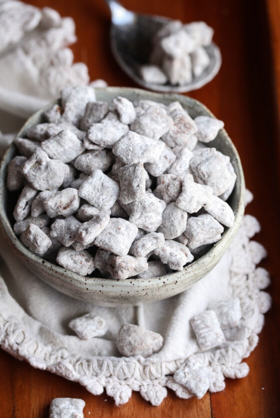

Puppy Chow

Puppy Chow (Muddy Buddies) is a classic snack mix that everyone loves! Rice Chex coated in a silky mixture of chocolate and peanut butter all coated in powdered sugar.
INGREDIENTS
- 9 cups Rice Chex
- 1 1/2 cups semi sweet chocolate chips
- 1 cup creamy peanut butter
- 1/3 cup butter
- 1 teaspoon vanilla
- 3 cups powdered sugar
INSTRUCTIONS
- Pour cereal into a large bowl (if the bowl has a lid, even better) and set aside.
- In a medium microwave-safe bowl heat together the chocolate chips, peanut butter, and butter for 30 seconds. Stir, and repeat heating until mixture is smooth. Stir in the vanilla.
- Pour the mixture on top of the cereal and gently stir until all the cereal is coated.
- If your bowl has a lid, pour the powdered sugar on top of the cereal mixture (alternately you can do this in a large 2- gallon sized zip-top bag). Cover or seal and gently shake until the powdered sugar coats all the cereal. Break up clumps as they form and shake again.